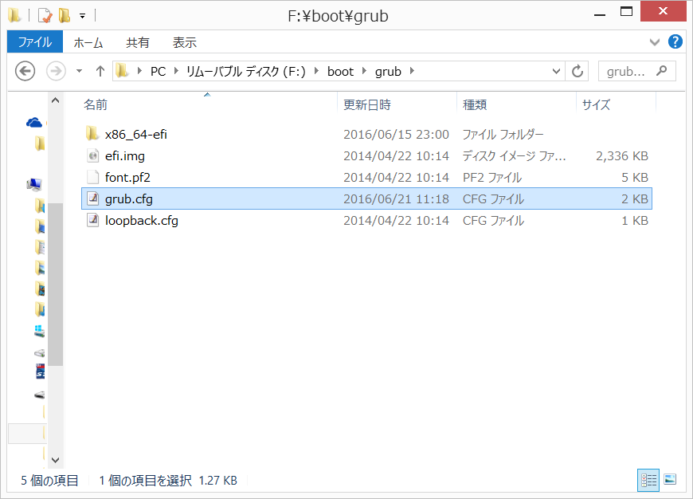
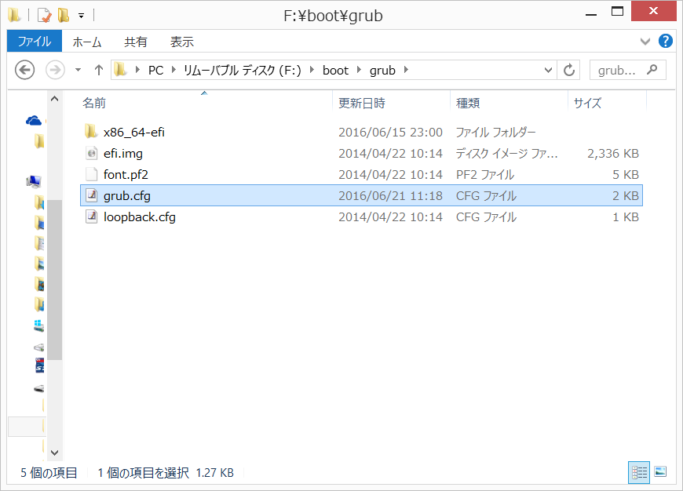

Windows、Macなどで、下記URLを右クリックし「名前をつけてリンク先を保存」または「対象をファイルに保存」を選択し、grub.cfgをダウンロードして下さい。(2kB)
Live USBをWindows、Macなどで開き、ダウンロードしたgrub.cfgファイルを、boot/grub ディレクトリにある同ファイルに、上書きコピーして下さい。
UEFIブート対応PCでは、Live USBにデータを保存できない不具合があることがわかりました。下記の手順で、不具合を修正して下さい。なお、2016/6/21 14:00以降にisoファイルをダウンロードした方は、既に不具合が修正されていますので、動作確認のみ行って下さい。
Windows、Macなどで、下記URLを右クリックし「名前をつけてリンク先を保存」または「対象をファイルに保存」を選択し、grub.cfgをダウンロードして下さい。(2kB)
Live USBをWindows、Macなどで開き、ダウンロードしたgrub.cfgファイルを、boot/grub ディレクトリにある同ファイルに、上書きコピーして下さい。
 「無題のドキュメント」というファイルが作成されます。
「無題のドキュメント」というファイルが作成されます。